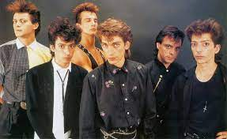

Rock Nacional
El rock argentino, llamado en su país rock nacional, es una denominación musical muy amplia, aplicada a cualquier variedad de música rock producida en Argentina. Argentina fue el primer país del ámbito iberoamericano que combinó los diversos géneros derivados del rock and roll con elementos locales, desarrollando así un rock de identidad propia, que recibió el nombre de «rock nacional». Las primeras bandas de rock argentino tomaron de las bandas mexicanas la idea de cantar en su propio idioma (como sucedía, también a principios de los años 1960, con el rock francés y el fenómeno del Anatolian Rock, en Turquía, en idioma turco). No obstante, si los músicos mexicanos en general se conformaban con traducir al español las letras de los grandes éxitos anglosajones, los argentinos pronto se diferenciaron por un uso más personal del idioma castellano, buscando comunicar y referenciar la geografía, historia, música, cine, costumbres, etcétera, nacionales e incluir elementos culturales locales como la jerga y el lunfardo. Estos componentes le dieron origen a una forma de hacer rock. De este modo, el rock argentino se convirtió en un importante precursor del rock de habla hispana y el que logró inicialmente mayor éxito comercial fuera de sus fronteras. Así es destacado y reconocido en toda Iberoamérica, por la gran popularidad de las bandas y artistas, que cosecharon récords en ventas de álbumes y en asistencias a recitales
Bandas y solistas
- Charly Garcia
- Gustavo Cerati
- Soda Stereo
- Spinetta
- Virus 

Cancion mas famosa


Cancion mas famosa

Cancion mas famosa